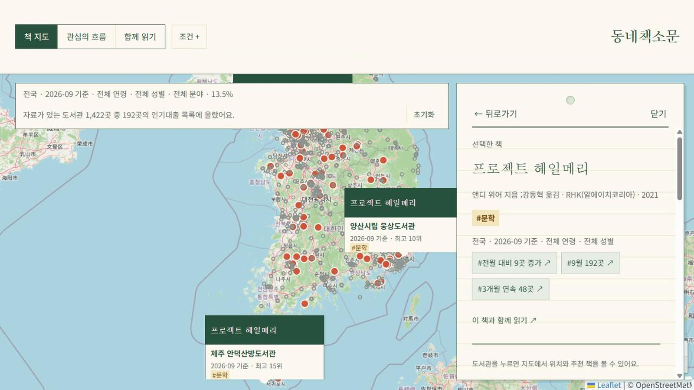

01 동네책소문
개인 프로젝트 · 콘텐츠 서비스 기획
책을 따라, 우리 동네 관심의 흐름을 읽다동네책소문은 지역별 인기 대출 도서와 그 변화를 통해 지역의 독서 관심사를 탐색하는 서비스입니다. 발견한 책과 관심 주제를 도서관의 모임과 경험으로 연결하는 방향으로 확장을 계획하고 있습니다.
역할
서비스 기획, 데이터 수집 기준·정보 구조·화면 설계, QA와 개선 방향 결정
제작 방식
기획 판단과 검수는 직접 하고 코드 구현은 ChatGPT·Claude와 협업했습니다.

01 · ORIGIN
지역마다 인기 있는 책이 다르고 같은 지역에서도 시기에 따라 인기 책이 달라집니다. 저는 이 변화의 흐름에서 지역 사람들이 어떤 주제에 관심을 두는지 엿볼 수 있겠다고 생각했습니다.
도서관 정보나루는 도서관별 월간 인기 대출 목록을 제공하기 때문에 지역과 시기를 함께 비교할 수 있었습니다. 핵심은 책이 '어디에서' 관심을 받는지였기에 검색창이나 표보다 지도를 탐색의 출발점으로 삼았습니다.
물론 인기 대출 목록이 주민의 생각을 직접 측정하는 자료는 아닙니다. 그렇기에 서비스의 목적을 지역의 독서 관심사를 탐색하는 단서를 제공하는 것으로 정했습니다.
1차 범위: 인기 대출 목록의 지역·월별 변화 · 후속 과제: 화제 키워드와 책 데이터 연결 · 이용자 수요 조사 미실시
02 · SERVICE
1,602곳 · 14개월
등록 도서관의 인기 대출 목록 · 2025.08 – 2026.09
이용자가 어디에서 시작하든 "이 책은 어디에서, 언제 관심을 받았을까?"라는 질문에 닿도록 네 가지 탐색 방향을 만들었습니다.
| 탐색 방향 | 확인하는 정보 | 답하는 질문 |
|---|---|---|
| 지역에서 시작 | 지도에서 고른 지역·도서관의 인기 대출 도서 | 우리 동네에서는 어떤 책이 보일까? |
| 기간을 선택 | 고른 달의 목록, 전월 대비 달라진 책, 꾸준히 보인 책 | 관심은 언제, 어떻게 바뀌었을까? |
| 책에서 시작 | 그 책이 목록에 오른 도서관의 분포와 월별 추이 | 이 책은 어디에서 관심을 받고 있을까? |
| 도서관·행사로 연결 | 도서관 상세의 월간 순위, 함께 읽기의 행사와 모임 책 후보 | 발견한 책을 함께 읽을 자리로 어떻게 이어 갈까? |
화면은 세 메뉴로 나눴습니다. 책 지도에서 사람들의 관심을 받은 책을 발견하고 관심의 흐름에서 그 책이 주목받는 이유를 읽고 함께 읽기에서 관련 행사와 모임 책 후보를 살펴봅니다.
책을 모르는 상태로 들어와도 시작할 수 있도록 관심의 흐름은 검색 전 개요와 책을 고른 뒤의 상세로 나눴습니다.
| 기능 | 하는 일 |
|---|---|
| 필터 | 기간·지역·연령·성별·분야·검색으로 목록을 좁힙니다. |
| 요약 책갈피 | 지금 살펴볼 만한 책과 그 이유를 한 문장으로 안내합니다. |
| 책 카드 | 표지 이용권을 고려해 표지 대신 제목과 도서관 정보가 읽히는 텍스트 카드로 표시합니다. |
| 관심의 흐름 | 자주 보인 책·달라진 책·꾸준히 보인 책·지역에서 두드러진 책의 개요와, 책을 고른 뒤의 월별 추이를 보여줍니다. |
| 도서관 상세 | 그 도서관의 월간 인기 대출 순위를 출처·기준 월과 함께 보여줍니다. |
| 함께 읽기 | 공식 행사 시범 목록을 보여주고 모임에서 읽을 책 후보를 근거와 함께 비교합니다. |
연령·성별 조건: 2026.07 – 09 반영 · 이전 달은 보강 수집 중('자료 없음' 표시)
03 · DECISION
지역의 독서 관심사를 탐색하려면 화면의 숫자가 무엇을 뜻하는지부터 이해할 수 있어야 했습니다. 원자료를 확인해 보니 도서관별 월간 순위는 있었지만 대출 건수는 없었습니다. 그래서 비슷해 보이는 세 가지 정보를 구분해 표시했습니다.
| 화면의 정보 | 실제 의미 | 이렇게 설명하지 않습니다 |
|---|---|---|
| 도서관별 월간 순위 | 그 도서관·그 달 원자료의 순위. 공동 순위도 그대로 표시 | 지역 1위, 전국 1위 |
| 여러 도서관 목록에 오른 횟수 | 그 책이 인기 대출 목록에 오른 도서관 수(자체 집계) | 실제 대출 횟수, 독자 수 |
| 지도의 지역별 분포 | 고른 기간에 그 책이 목록에 오른 도서관의 위치 | 지금 빌릴 수 있는 도서관 |
비교할 때도 같은 원칙을 적용했습니다. 전월 대비 변화는 두 달 모두 자료가 있는 같은 도서관끼리 비교하고 '지역에서 두드러진 책'에는 작은 표본이 과장되지 않도록 최소 조건을 두었습니다. 안내 문장도 '사람들이 이렇게 생각한다.'가 아니라 '이 책이 몇 군데의 인기 대출 목록에 올랐다.'처럼 확인한 사실만 말하도록 썼습니다.
판단 수정: 순위 전면 제외(순위 불일치·공동 순위) → 원자료 재확인 후 도서관 상세에 출처·기준 월과 함께 표시
04 · DESIGN & QA
처음 온 이용자가 많은 도서관 점과 책 카드 사이에서 탐색을 시작할 수 있도록 지도 옆 요약 책갈피를 첫 안내로 삼았습니다. 책갈피는 '왜 지금 이 책인가?', 지도는 '어디에서 목록에 올랐나?'를 한눈에 보여 줄 수 있도록 각기 역할을 나눴습니다.
관심의 흐름에서도 단순한 등장 횟수 대신 전월 대비 변화나 지역의 특징처럼 책을 살펴볼 이유를 설명했습니다. 책갈피와 지도의 기준 월을 맞추고 색의 의미는 범례로 구분했습니다.
문제책 카드의 제목과 도서관 영역 중 어디를 눌러도 책 분포와 도서관 상세가 번갈아 열렸습니다. 카드 전체가 하나의 클릭 영역이었고 열린 패널 상태가 다음 동작에 영향을 주었기 때문입니다.
판단제목과 도서관 영역을 독립된 버튼으로 나누고 목적지를 고정했습니다.
| 누른 곳 | 수정 전 | 수정 후 |
|---|---|---|
| 책 제목 | 열린 패널에 따라 책 분포 또는 도서관 상세 | 항상 그 책의 도서관 분포 |
| 도서관 이름·정보 | 열린 패널에 따라 책 분포 또는 도서관 상세 | 항상 해당 도서관 상세 |
확인2026년 10월 11일 시험 배포판에서 두 경로와 '책 분포 → 도서관 상세 → 책 분포'의 재진입을 확인했습니다. 키보드로도 각 버튼에 접근할 수 있습니다.
QA 범위: 개인 사용 점검 · 외부 이용자 테스트와 효과 측정 미실시
05 · RESULT & NEXT
시험 배포판에서 책 지도·관심의 흐름·함께 읽기 세 화면을 시연할 수 있고 원자료 순위와 자체 집계를 구분하는 표시 기준을 화면 전체에 적용했습니다.
도서관을 책을 빌리는 장소에 더해, 자기 계발과 지식을 나누는 모임과 경험의 공간으로 소개하려 합니다. 지역의 인기 책과 관심 주제를 모임 주제를 찾는 참고 자료로 쓰고 관련 행사와 프로그램을 찾아보도록 연결하는 방향입니다.
현재는 강동구 공식 행사 4건과 인기 대출 근거를 붙인 모임 책 후보를 시범 제공하고 있습니다. 앞으로 도서관 프로그램과 모임 주제 탐색으로 연결 범위를 넓히려 합니다.
| 구분 | 현재 구현 | 다음 계획 |
|---|---|---|
| 행사 연결 | 강동구 공식 행사 4건을 출처 링크와 함께 시범 목록으로 정리 | 도서관 행사·프로그램과 독립서점·북페어·독서 모임 정보로 범위 확대 |
| 모임 주제 | 인기 대출 근거를 붙인 모임 책 후보 비교 | 관심 주제를 독서·자기계발 모임의 주제 탐색에 활용 |
| 연결 기준 | 같은 책이나 같은 저자일 때만 '이 책의 행사'로 표시 | 책·저자 자동 매칭, 지난 행사 숨김, 확인일 표기 |
| 모임 등록·모집 | 미구현 | 법률·운영 정책 검토 후 단계 |
정식 공개 후에는 이용자가 집계 기준을 이해하며 지역의 독서 관심사를 탐색하는지 확인하려 합니다. 발견한 책과 주제가 도서관 프로그램 탐색이나 모임 주제 선택으로 이어지는지도 함께 살펴보려 합니다.
현재 단계: 시험 배포 · 정식 공개와 월별 자동 갱신 준비 중
06 · PROCESS
| 구분 | 내용 |
|---|---|
| AI와 함께한 작업 | 인기 대출 API 수집기, 데이터 정리와 월별 자료 생성, 지도 웹앱 구현, 시험 배포 |
| 직접 정한 것 | 수집 범위와 기준 월, 숫자의 의미와 안내 문구, 메뉴와 화면 구성, 수정 우선순위 |
| 검토 방법 | 배포된 화면을 직접 사용하며 문제를 스크린샷으로 전달하고 수정 후 같은 경로를 다시 확인 |
| 완료 기준 | 코드가 오류 없이 만들어지는 것에서 멈추지 않고 실제 화면에서 지도와 패널이 제대로 바뀌는지까지 확인(배포 직후 화면이 멈춘 사례 이후 적용) |
| 데이터 반영 기준 | 수집에 실패했거나 검증이 끝나지 않은 달의 자료는 화면에 올리지 않음 |
반영 현황: 2026.08 – 09 품질 검사 통과 후 반영 · 과거 연령·성별 보강 수집 중 · 월별 자동 수집·배포 구축 중